This function makes it easy to assign different labellers to different factors. The labeller can be a function or it can be a named character vectors that will serve as a lookup table.
labeller(
...,
.rows = NULL,
.cols = NULL,
keep.as.numeric = NULL,
.multi_line = TRUE,
.default = label_value
)Arguments
| ... | Named arguments of the form |
|---|---|
| .rows, .cols | Labeller for a whole margin (either the rows or
the columns). It is passed to |
| keep.as.numeric | Deprecated. All supplied labellers and on-labeller functions should be able to work with character labels. |
| .multi_line | Whether to display the labels of multiple factors on separate lines. This is passed to the labeller function. |
| .default | Default labeller for variables not specified. Also used with lookup tables or non-labeller functions. |
Value
A labeller function to supply to facet_grid() or facet_wrap()
for the argument labeller.
Details
In case of functions, if the labeller has class labeller, it
is directly applied on the data frame of labels. Otherwise, it is
applied to the columns of the data frame of labels. The data frame
is then processed with the function specified in the
.default argument. This is intended to be used with
functions taking a character vector such as
Hmisc::capitalize().
See also
Examples
# \donttest{
p1 <- ggplot(mtcars, aes(x = mpg, y = wt)) + geom_point()
# You can assign different labellers to variables:
p1 + facet_grid(
vs + am ~ gear,
labeller = labeller(vs = label_both, am = label_value)
)
 # Or whole margins:
p1 + facet_grid(
vs + am ~ gear,
labeller = labeller(.rows = label_both, .cols = label_value)
)
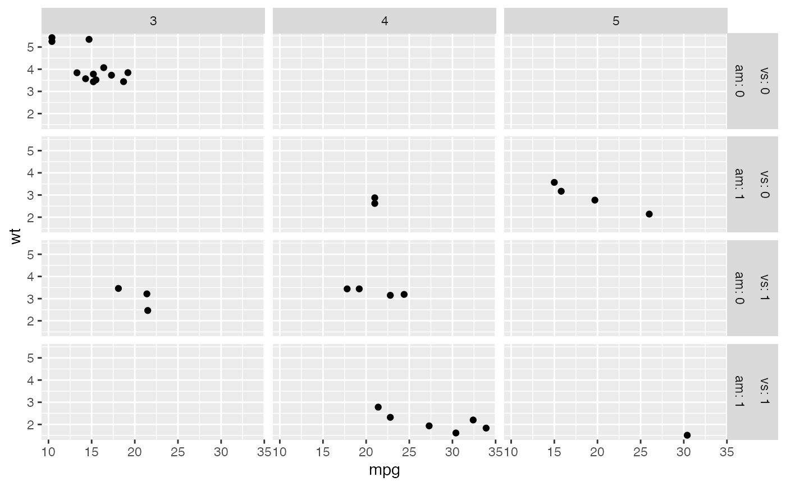
# You can supply functions operating on strings:
capitalize <- function(string) {
substr(string, 1, 1) <- toupper(substr(string, 1, 1))
string
}
p2 <- ggplot(msleep, aes(x = sleep_total, y = awake)) + geom_point()
p2 + facet_grid(vore ~ conservation, labeller = labeller(vore = capitalize))
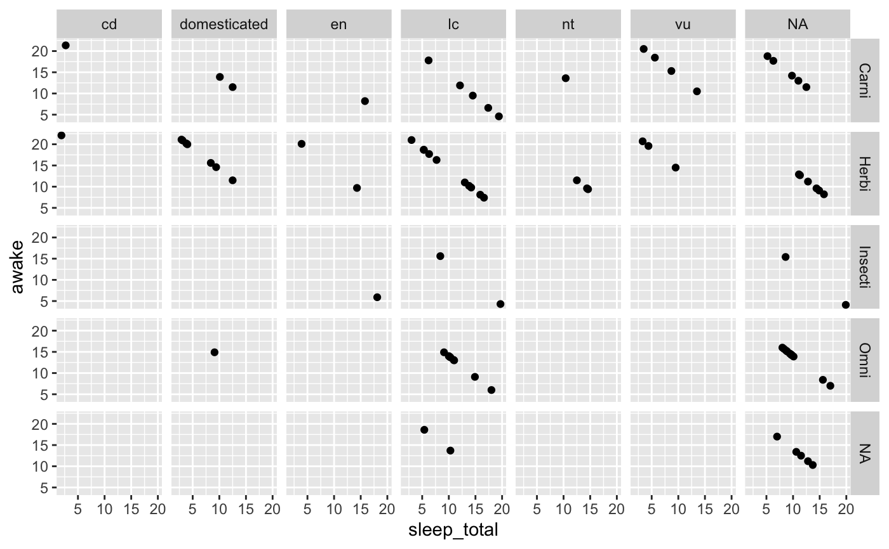
# Or use character vectors as lookup tables:
conservation_status <- c(
cd = "Conservation Dependent",
en = "Endangered",
lc = "Least concern",
nt = "Near Threatened",
vu = "Vulnerable",
domesticated = "Domesticated"
)
## Source: http://en.wikipedia.org/wiki/Wikipedia:Conservation_status
p2 + facet_grid(vore ~ conservation, labeller = labeller(
.default = capitalize,
conservation = conservation_status
))
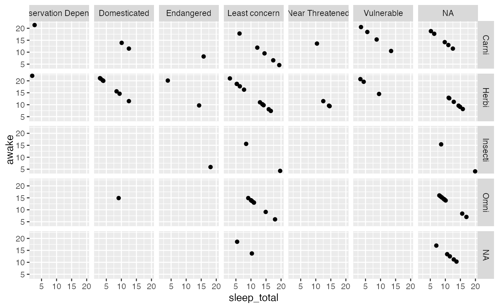
# In the following example, we rename the levels to the long form,
# then apply a wrap labeller to the columns to prevent cropped text
idx <- match(msleep$conservation, names(conservation_status))
msleep$conservation2 <- conservation_status[idx]
p3 <- ggplot(msleep, aes(x = sleep_total, y = awake)) + geom_point()
p3 +
facet_grid(vore ~ conservation2,
labeller = labeller(conservation2 = label_wrap_gen(10))
)
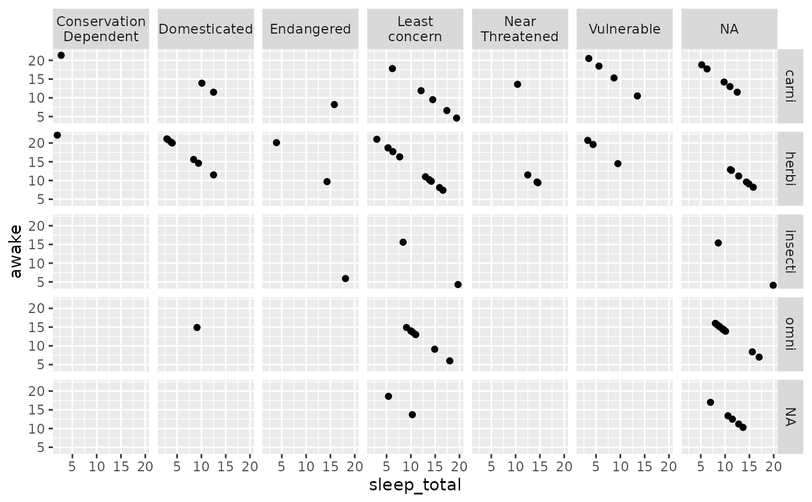
# labeller() is especially useful to act as a global labeller. You
# can set it up once and use it on a range of different plots with
# different facet specifications.
global_labeller <- labeller(
vore = capitalize,
conservation = conservation_status,
conservation2 = label_wrap_gen(10),
.default = label_both
)
p2 + facet_grid(vore ~ conservation, labeller = global_labeller)
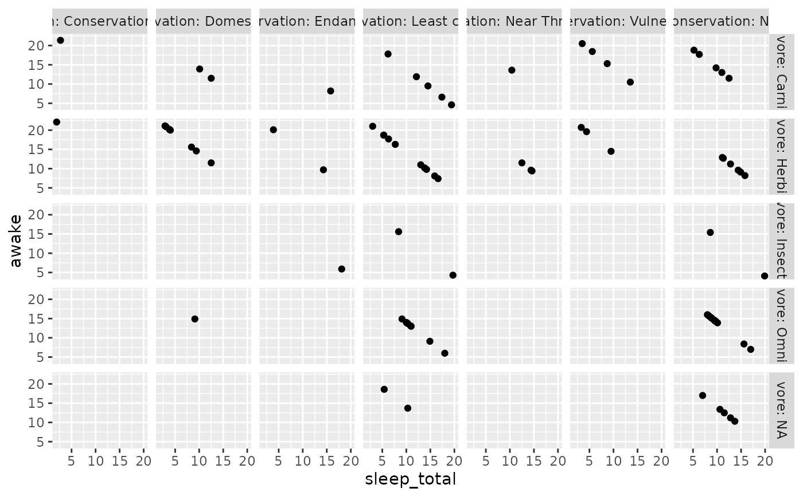
p3 + facet_wrap(~conservation2, labeller = global_labeller)
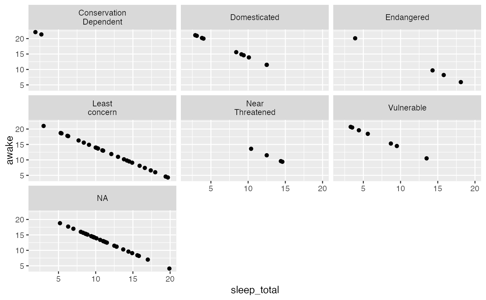
# }
# Or whole margins:
p1 + facet_grid(
vs + am ~ gear,
labeller = labeller(.rows = label_both, .cols = label_value)
)
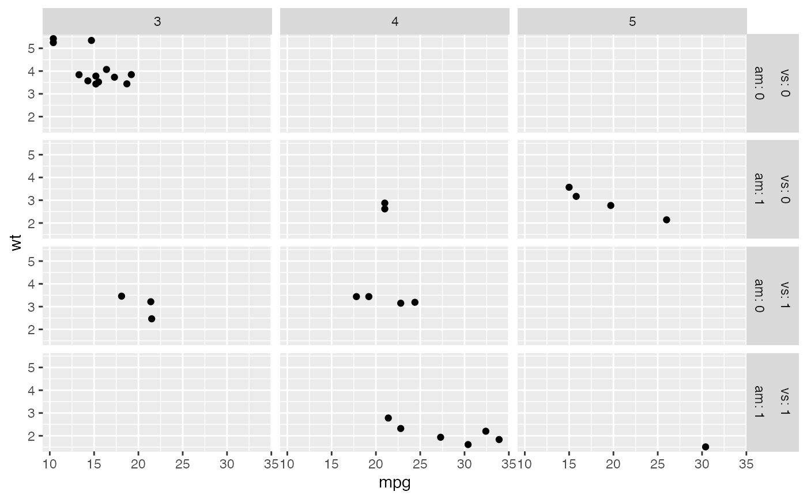
# You can supply functions operating on strings:
capitalize <- function(string) {
substr(string, 1, 1) <- toupper(substr(string, 1, 1))
string
}
p2 <- ggplot(msleep, aes(x = sleep_total, y = awake)) + geom_point()
p2 + facet_grid(vore ~ conservation, labeller = labeller(vore = capitalize))
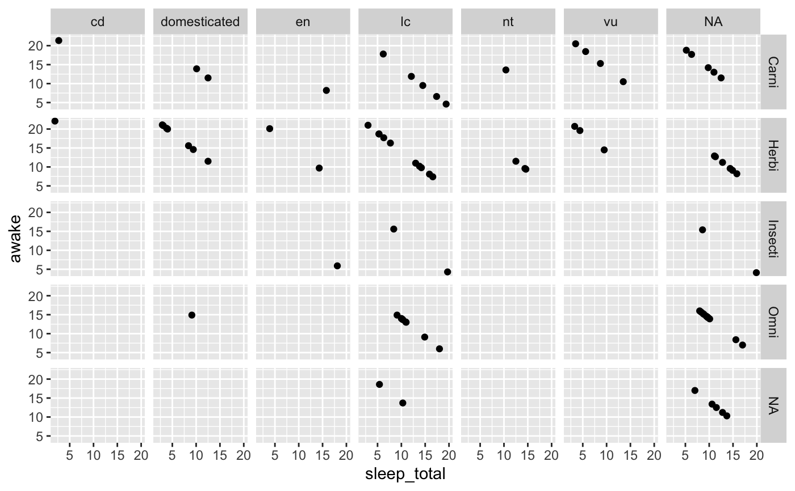
# Or use character vectors as lookup tables:
conservation_status <- c(
cd = "Conservation Dependent",
en = "Endangered",
lc = "Least concern",
nt = "Near Threatened",
vu = "Vulnerable",
domesticated = "Domesticated"
)
## Source: http://en.wikipedia.org/wiki/Wikipedia:Conservation_status
p2 + facet_grid(vore ~ conservation, labeller = labeller(
.default = capitalize,
conservation = conservation_status
))
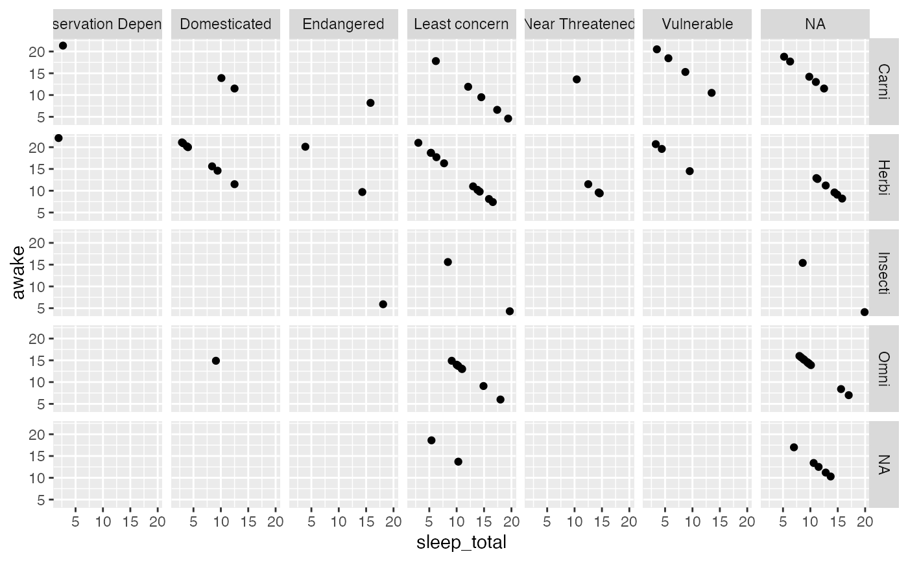
# In the following example, we rename the levels to the long form,
# then apply a wrap labeller to the columns to prevent cropped text
idx <- match(msleep$conservation, names(conservation_status))
msleep$conservation2 <- conservation_status[idx]
p3 <- ggplot(msleep, aes(x = sleep_total, y = awake)) + geom_point()
p3 +
facet_grid(vore ~ conservation2,
labeller = labeller(conservation2 = label_wrap_gen(10))
)
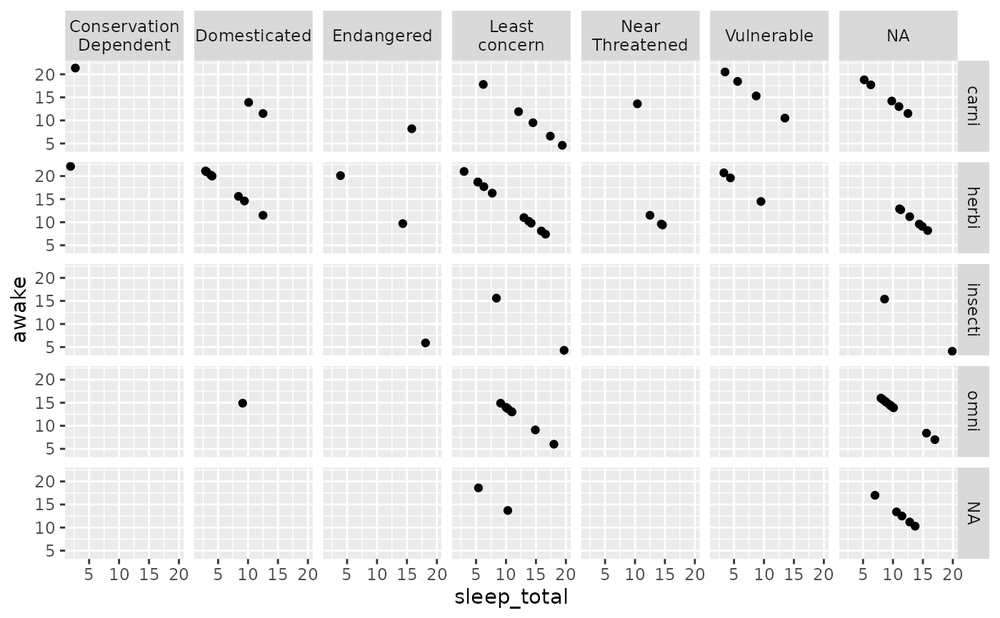
# labeller() is especially useful to act as a global labeller. You
# can set it up once and use it on a range of different plots with
# different facet specifications.
global_labeller <- labeller(
vore = capitalize,
conservation = conservation_status,
conservation2 = label_wrap_gen(10),
.default = label_both
)
p2 + facet_grid(vore ~ conservation, labeller = global_labeller)
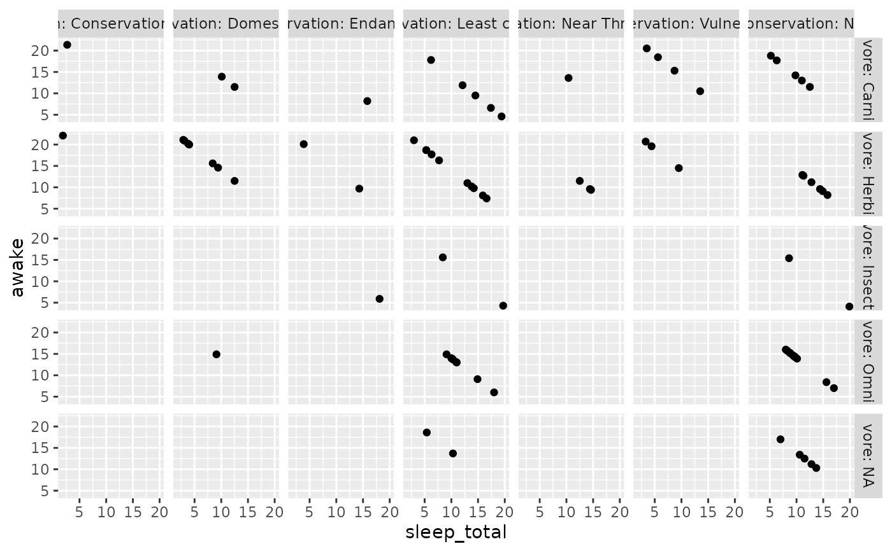
p3 + facet_wrap(~conservation2, labeller = global_labeller)
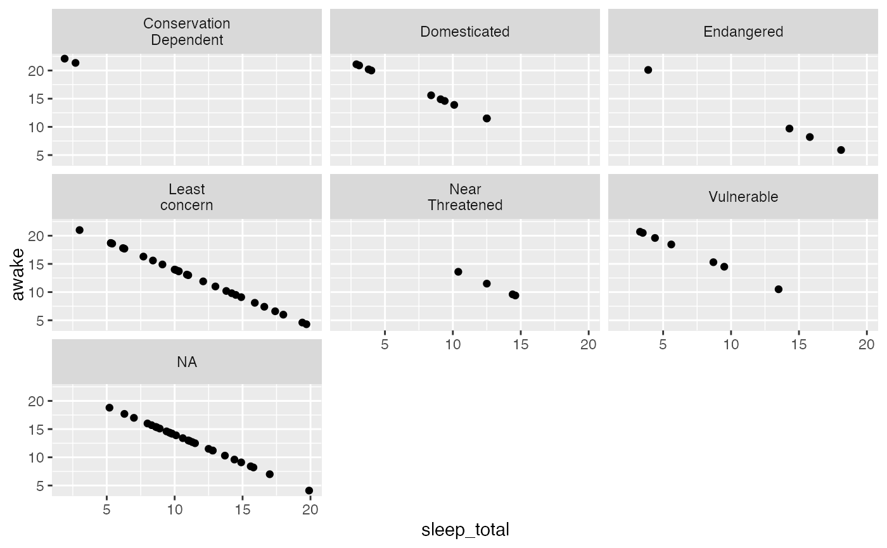
# }